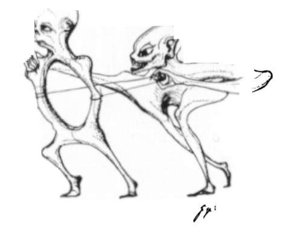

|
|
 |
|
| Marco Montanari | |
Figura dell'arte moderna che si è occupata fra l'altro di interazione fra macchina e uomo (non si tratta di interazione macchina-utente, ma interazione interna a livello organico) è sicuramente il surrealista Hans Rudi Giger.
Nato a Chur, villaggio svizzero, il 05.02.1940, ebbe seri problemi scolastici, dovuti soprattutto alla scelta di mandarlo alla "modell-schule", nella quale i compiti erano scarsi come la preparazione che dava. Dopo i primi problemi comunque la scuola superiore fu per il giovane Giger un momento di estrema importanza: deivenuto amico del preside vdella scuola di Chur, questi gli insegnò a costruire, scrivere e disegnare un pezzo teatrale. All'esame finale non riuscì a passare, e dunque i genitori lo mandarono a rifare l'ultimo anno in una scuola a Losanna. Qui imparò Italiano e Inglese. Divenuto infine architetto di interni (lavoro che non gli è mai piaciuto completamente), nel 1959 iniziò a pubblicare alcuni suoi disegni nei giornali underground di Chur. La sua prima pubblicazione fu"Atomkinder", una serie di schizzi disegnati sul retro di un calendario
Nell 1969 inizia la serie dei biomeccanoidi. Da questo momento in poi la carriera e la notorietà di Giger cresceranno molto rapidamente.
Del 1972 è al serie "Paesaggi"
Nel 1975 Li si suicitò in seguito a crisi depressive. Per Giger il periodo dal 1975 al 1977 sarà un periodo di totale astinenza dalla pittura, e di autocritica. Durante questi anni incontra vari artisti, fra cui Salvador Dalì, con il quale intratterrà sempre una profonda amicizia. A lui deve la consapevolezza di essere surrealista. L'incontro con altri artisti non svizzeri gli aprì il mondo dell'arte non pittorica, ossia la scultura e la decorazione di interni.
Durante il suo primo viaggio negli Stati Uniti gli venne chiesto di preparare delle bozze per un progetto chiamato "Alien". Contemporaneamenteiniziò a progettare le scenografie di Dune, nel quale doveva partecipare come attore principale l'amico Dalì, oltre al suo maggior successo: Necronomicon. Nello stesso periodo conosce Mia Bonzanigo, sua seconda moglie, e sua seconda musa (lei poserà per la serie "Erotomechanics").
Nel 1979 esce Alien, e Giger e Mia vengono mandati a Nizza alla prima proiezione europea come "cuscinetti" per le critiche. Il viaggio li porterà a Londra, Parigi New York e, infine a Hollywood.
Un anno dopo il gruppo di scenografi e addetti agli effetti speciali composto da Giger, Carlo Rambaldi (Oscar con E.T. - 1982), Brian Johnson (Oscar per Star Wars - 1980) e Nick Allder (finalista per Il Quinto Elemento - 1997) riceve l'Oscar per i migliori effetti speciali.
Durante la notte degli Oscar incontra la cantante Debbie Harry, Blondie. Questa gli chiese la collaborazione per la copertina del nuovo album. Come lei ben presto molti altri musicisti chiesero la sua collaborazione.
Dopo un anno e mezzo di matrimonio con Mia, il divorzio consensuale. Sono tuttora ottimi amici.
Nel 1981 i frequenti viaggi a New York gli ispirano la serie di visioni urbane "NY Paintings".
Nel 1985 gli autori di Poltergeist 2 chiedono la sua collaborazione. Il film non gli piace, e nessuno lo ha informato del progetto "Alien 2". In America sarà un successo strepitoso, mentre in Europa il fiasco è totale.
Iniziano le grandi esposizioni internazionali dedicate a Giger. Soprattutto in Giappone, fra 1988 e 1990, ci furono varie esposizioni. Per la principale di queste, al "Seibu Museum of Art", Giger dipinse la serie "Japanese Excursion"
Nel 1990, in occasione del suo 50 compleanno, la produzione di Alien III richiese il suo contributo, anche se poi non venne utilizzato.
Nel 1995 viene chiesto a Giger di partecipare alla produzione del film Species, per il quale sborserà lui stesso 100.000$ (la MGM voleva togliere una scena completamente creata da Giger).